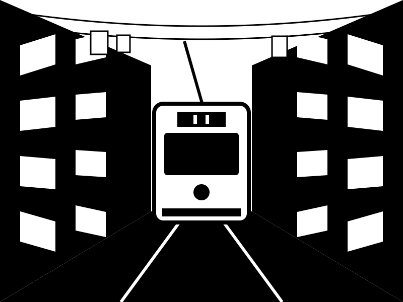

Om half acht stond ik al bij de halte op Praça Martim Moniz, want iedereen had gezegd: later is het vol. Tram 28 kwam piepend de hoek om, geel en veel kleiner dan ik dacht.
De bestuurder knikte, ik ging achterin zitten en we klommen de Alfama in. De straatjes zijn daar zo smal dat je de was van iemands balkon kunt aanraken. Bij elke bocht dacht ik: nu gaat het mis.

Een mevrouw met een tas sinaasappels stapte in, zag mijn gezicht en lachte. ‘Todos os dias,’ zei ze. Elke dag.
Bij de Miradouro da Graça ben ik uitgestapt. Beneden lag de stad met al haar daken, en ergens daartussen piepte tram 28 alweer de volgende bocht om.